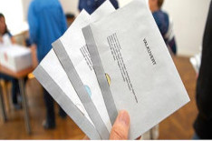
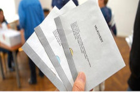

Sverige är ett demokratiskt nation och är en del av demokratiska uppbyggnaden är
ätten att rösta. Rätten att rösta kallas rösträtt.
För att kunna rösta måste man vara 18 år gammal.
Valet är på det fjärde året.
Om du bor utomlands, kan du rösta via den svenska ambassaden eller ett svenskt konsultat.
För rösta lite tidigare kallas för förtidsrösta måste du ha ett giltig id handling.
Pass eller Id-kort, Körkort.

Det finns tre delar man röstar på:
Riksdagen
Landstinget
Kommunen
En Valsedel ser ut så här.
På valsedel finns det namn på politiska personer som representeras av partiet.
Det är här vi väljer vilka som får vår röst att kunna få makten styra Sverige.
På länken (Partier) länk är klickar med musen så att man kan ta sig fram till sidan partiet.
Där kan du klicka på parti symbolerna för att veta vad dem står för.
 
